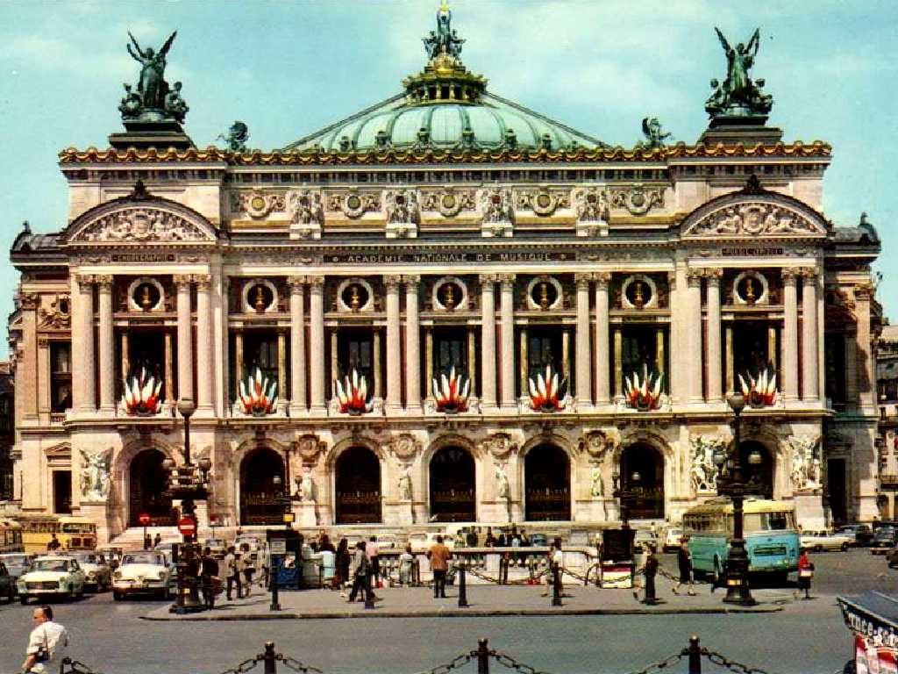
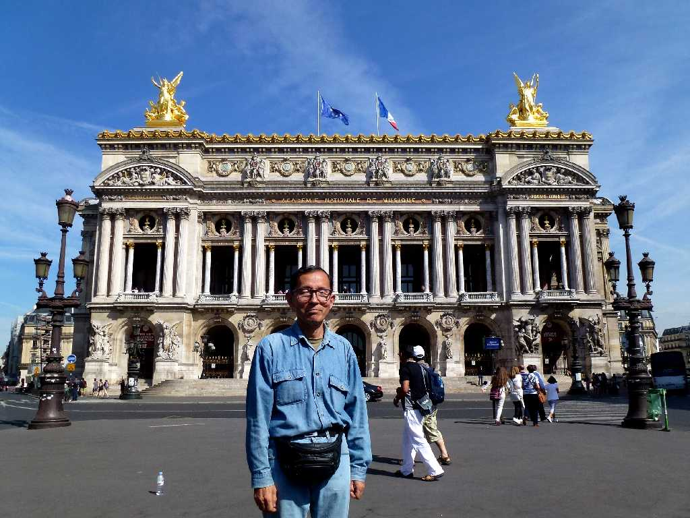
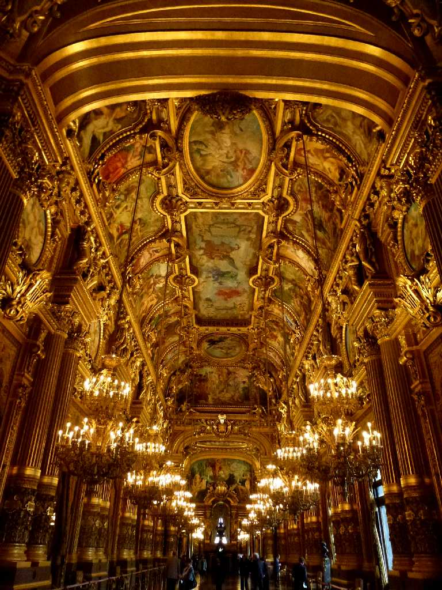
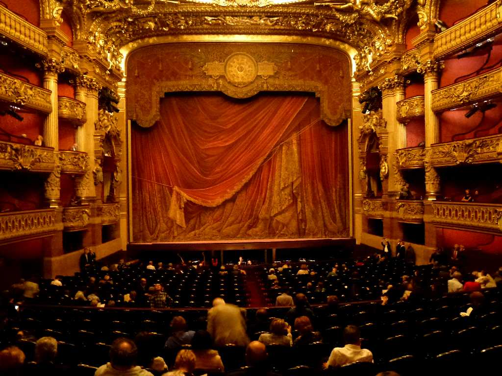
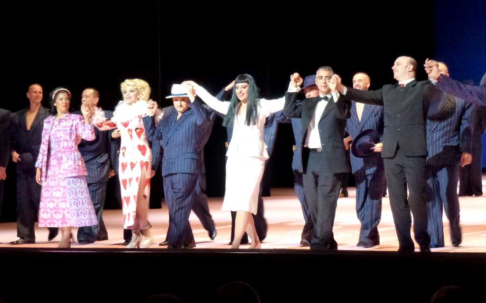
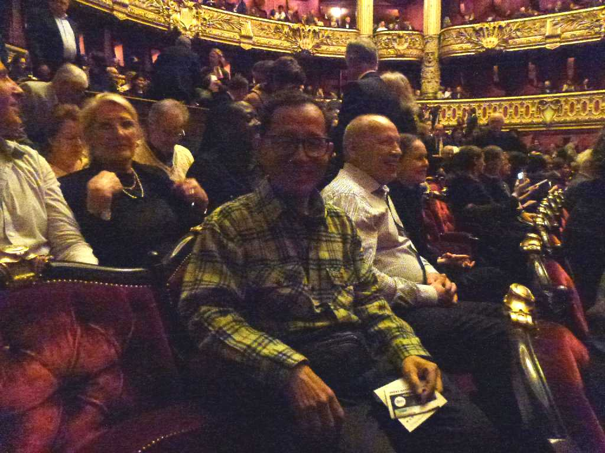

August 1973 Palais Garnier L'Opéra Opéra National de Paris
１８７５年に創られたネオバロック様式の華麗な歌劇場パリオペラ座

August 5 2013 Opéra National de Paris
８０日間世界一周鉄道の旅で４３日目 学生時代以来約４０年ぶりの再訪問

Palais Garnier Opéra National de Paris
８０日間世界一周鉄道の旅以来８ヶ月ぶりの再訪問でパリオペラ座ガルニエ宮でオペラ鑑賞

Opéra National de Paris

ロッシーニ : アルジェリアのイタリア女

March 31 2014 Opéra National de Paris